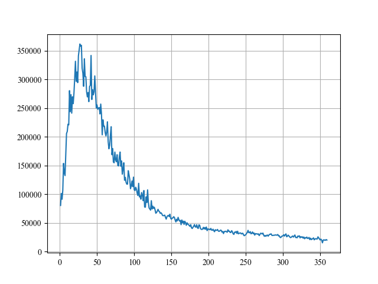
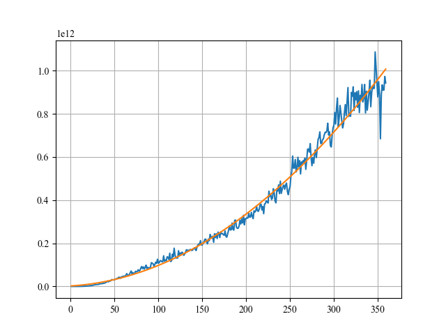
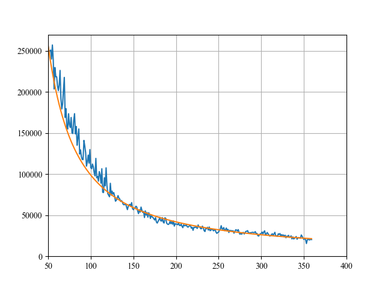
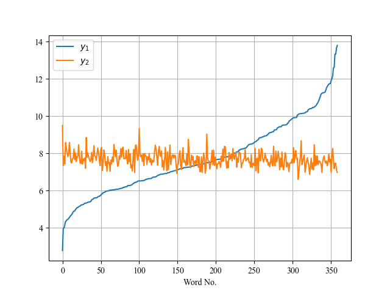
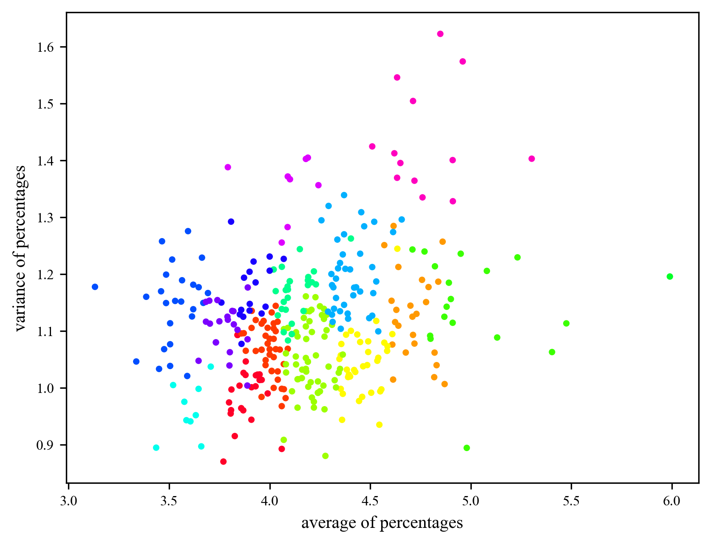
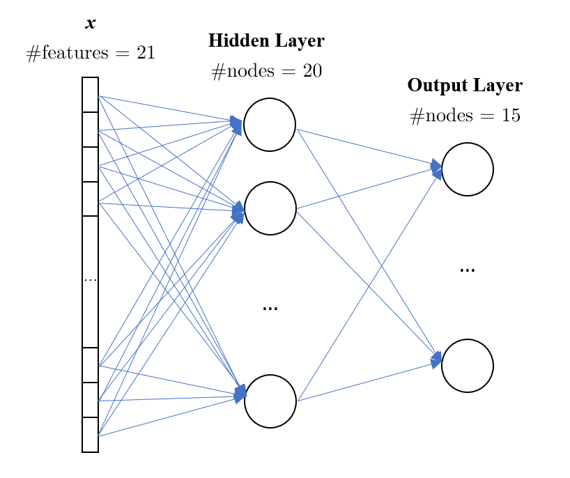

3 Task 1: Reported Result Modeling and Analysis
3.1 Model and Predict the Number of Reported Results
根据经验，我们会认为一款游戏的游玩人数（在这里可以视为等同于报告结果数）通常是先增加再减少的——起初，游戏不断地在人群中扩散传播，并且新颖的游戏规则的确捕获了许多人游玩，因此数量会增加，但随着时间的推移，大部分人会对这款游戏逐渐产生厌倦，同时游戏的传播力度会不断下降，受众最终达到饱和，因此数量会减少。设从 2022 年 1 月 7 日开始，每一天的编号依次为 1,2,⋯，利用给定文件中的数据绘制的报告结果数如图 1 所示（横向数据表示天的编号，纵向数据表示报告结果数，下同）。

总体上，结果的趋势与我们的经验估计相吻合。接下来，设图 1 中天数编号 t 与当天报告结果数 N 之间大致满足关系
N(t)=g(t)f(t).
这里选用分式函数的原因与我们的经验分析密切相关，函数 f(t) 与 g(t) 大体上都随着时间 t 的增加单调不降，分子函数 f(t) 描述了游戏不断在人群中扩散，报告结果数理论上应不断增加的情形，但实际上，它受到了描述对游戏厌倦程度的分母函数 g(t) 的约束，且从数学上，g(t) 比 f(t) 更“高阶”，这样才能达到图 1 表现出的 t→∞limN(t)=0 的效果。
对函数 g(t) 进行理论分析与构建是较为困难的，我们仅仅知道它基本与时间 t 呈正相关。不妨从简单的函数入手，设 g(t)=tk（先假定 k∈Z），此时要拟合函数 N(t) 只需拟合函数 f(t)=N(t)⋅tk。依次尝试 k=1,2,⋯，当取 k=3 时，函数 f(t) 如图 2 中蓝色曲线所示。易见其已经可以利用二次函数进行较为良好的拟合。使用最小二乘法拟合出的结果为
f~(t)=6851251.27x2+308777521x−497008077,
其图象如图 2 中橙色曲线所示。因此这给出对 N(t) 的拟合为
N~(t)=x6851251.27+x2308777521−x3497008077.
从 t=50 开始，函数 N(t) 与 N~(t) 的图象如图 3 所示（其中蓝色曲线为 N(t)，橙色曲线为 N~(t)）。可以看出，N~(t) 已经是对 N(t) 的一个较好的拟合，且 t→∞limN(t)=0 的趋势也得到了保障。因此，我们选用 N~(t) 作为最终的拟合函数。


回顾我们最开始确定的 f(t) 的意义，它表明了游戏在人群中的扩散程度。仅从这一点看，我们拟合出的二次函数不足以给出一个合理的解释，因为二次函数最终会趋于无穷，但扩散程度却会趋于一个饱和阈值。不过，这并不表明我们构建的函数模型是虚弱的，因为无论是它对已有数据的拟合效果还是它对未来趋势的预估都令人满意。我们应当认为 N(t) 仅是来自于表达式 g(t)f(t) 的结果，而函数 f(t) 与 g(t) 本身则可以具有其它形式，毕竟，我们还强行规定了 2022 年 1 月 7 日对应 t=1。
2023 年 3 月 1 日对应 t=419，而 N~(419)≈18103。从 t=200 开始，N(t) 与 N~(t) 的最大误差 max∣N(t)−N~(t)∣≈6321。因此，我们给出 2023 年 3 月 1 日的游戏报告结果数区间
Ip=[18103−6321,18103+6321]=[11782,24424].
对于问题“单词的属性是否会影响结果百分比”，我们的回答是“是”。
直觉上，我们认为当结果为越常用的单词时越容易尽早被猜出来——想象你正在亲自玩 Wordle 游戏，你通常会优先尝试最早出现在你脑海里的含有五个字母的单词，而这些单词往往是较为常见的。为此，我们需要一份描述各个单词在平时生活中或文章中出现频率的数据。幸运的是，有人帮助我们完成了这一项工作，这份数据整理自 Wolframe，将所有 Wordle 词库中的单词按频率映射到了 [0,1)。
对于一个单词，设其频率权值为 Frq，猜测次数平均值（大于 6 次按 7 次计算）为 Avg，我们可以计算出如下两个属性 y1,y2：
y1y2=20+ln(e−20+Frq),=Avg+3.5.
上述运算保证了 y1,y2 的结果相近，且不改变 Frq 与 Avg 的总体趋势，即我们可以认为 y1,y2 分别直接代表了 Frq 与 Avg。将所有单词按照 y1 从小到大排序后，y1,y2 关于单词的图象如图 4 所示。

尽管不明显，但我们仍可以发现 y2 随着 y1 的升高总体呈下降趋势，这表明单词常见与否确实会影响猜测的结果百分比。一些实际的例子也说明了这一点：对于常见的单词 dream，有 5% 的人仅通过一次尝试就猜对，而仅有 1% 的人没有在 6 次尝试内猜对；对于不常见的单词 parer，几乎没有人仅通过一次尝试就猜对，而有约 48% 的人没有在 6 次尝试内猜对。
相邻两个字母的组合可能也会影响猜测结果。例如，我们认为含有字母组合 ea 的单词更容易被猜中（如 dream,feast，从给出的数据来看它们的猜测结果都较为良好），而含有字母组合 aw 的单词则不容易被猜中（如 gawky,awful）。
其他一些因素也值得考虑，如一个单词内的元音字母数量、辅音字母数量以及不同字母的数量，尽管目前我们无法给出一个它们与结果百分比关联的显式结果。所有的这些因素都将用于 4.2 部分深度学习中单词特征向量的构建。
利用单词的特征对 7 项结果百分比做直接估计是较为困难的。在 4.1 部分中，基于结果百分比本身，我们首先将所有测试过的单词分为了若干类，满足每一类中的所有单词的结果百分比尽量接近。随后，我们在 4.2 部分中利用深度学习构建出了一个以单词特征作为输入，分类编号作为输出的预测模型，并以单词 eerie 为例说明了如何通过分类编号得到具体的结果百分比预测。在最后的 4.3 部分，我们对预测的信心与不确定因素做了分析。
首先确定分类数 K。K 不应过小，否则每一类中单词的结果百分比将不会呈现出较为明显的共同特征；也不应过大，否则对深度学习过程不利。此处取 K=15。
我们使用 K-means 聚类算法完成这一过程。对于每一个单词，设其结果百分比分别为 p1,⋯,p6,pX，它们构成了 7 维坐标向量 p=(p1,⋯,p6,pX)。对 7 维空间中的任意两个点 P,Q，定义它们的欧几里得距离为聚类算法的距离函数，即设两点坐标向量为 p=(p1,⋯,p6,pX),q=(q1,⋯,q6,qX)，则它们之间的距离
dist(P,Q)=(pX−qX)2+i=1∑6(pi−qi)2.
选取该函数意味着被归为同一类的点，它们的各项结果百分比差距不会过大，这与我们的分类期望是相符合的。
关于利用 K-means 算法对所有单词进行分类的具体过程，由于与模型本身关联较小，因此这里略去。具体过程可在附录 I 中查看。

在成功将所有单词分为 K=15 类后，我们通过两个典型的统计数据：平均值和方差，来展示我们的分类效果。可以看到，平均值和方差接近的单词被分类在了同一个聚类中，因此对于未来的单词，如果我们顺利地确定了它所在的类别，那么预测出它的各项结果百分比也就较为容易了。
现在，我们已经拥有了给定单词的诸多特征以及主要依据结果百分比分出的 15 个类别。我们希望据此构建一个模型满足以单词及其特征作为输入，类别作为输出，它能作用到整个结果词集上，来帮助我们对未来的单词进行预测，也即形式化地，我们需要构建一个分类函数
h:x∈Rm→y∈{0,1,⋯,14},
其中 x 是由单词本身的特征构成的一个 m 维实列向量，m 是特征的数量，y 为类别编号。我们利用基于神经网络的深度学习实现这一函数的构建。
首先，利用已有的特征，我们可以为每一个单词构造出一个 21 维的特征列向量，即 m=21。列向量的具体构成如下（以 xi 表示列向量的第 i 维）：
- x0∼4：依次代表单词本身的各个字母。字母 a,b,⋯,z 对应的实数依次为 260,261,⋯,2625。
- x5∼9：依次代表单词各个字母在词库中的出现频率。
- x10∼13：依次代表相邻两个字母的组合。这里使用进制的思想完成实数对应，例如字母 b,c 分别对应 1,2，因而字母组合 bc 对应实数 2621×26+2。
- x14∼16：依次代表相邻三个字母的组合。对应方式同上。
- x17：元音字母数量除以 5。
- x18：辅音字母数量除以 5。
- x19：不同字母数量除以 5。
- x20：单词使用频率。
接下来构建神经网络。初始特征向量维度 m=21 与最终输出层的节点数量 15（即分类数）已经对中间层的节点数量做了较强的限制，因此这里我们仅构建双层神经网络，它由一个包含 20 个节点的隐藏层和 15 个节点的输出层组成，如图 8 所示。

关于利用神经网络进行学习与预测的具体过程，由于与模型本身关联较小，因此这里略去。具体过程可在附录 II 中查看。
最后，在经过较多次学习迭代后，神经网络在题目文件已经给出的单词集上的输出准确率约为 61%。这一准确率看似不高，但实际上单词本身可供提取的特征数并不多，这导致初始特征向量维度与最终输出层的节点数量之差极为微小（通常，利用神经网络进行深度学习的初始特征向量维度至少在千级甚至万级以上），特征的相关性也并不明显，因此取得大于 60% 的准确率已经是令人满意的结果。同时，若准确率过高也会出现过拟合现象，这不利于对未来单词的预测。
神经网络对 2023 年 3 月 1 日的结果单词 eerie 给出的预测分类编号是 2。该类中单词的结果百分比分布较为均匀，因此直接取平均值作为预测结果，用七元组表示即为：
(p1,p2,p3,p4,p5,p6,pX)=(0%,2%,11%,28%,32%,21%,5%).
模型的不确定性主要来自于两个方面，它们与上述分类与深度学习两个步骤分别对应。
在分类上，由于所有单词的结果百分比分布没有明确界限，因此处于不同分类中的单词结果差距并非一定明显，两个距离极小的点被分到了不同的类中的情况完全可能出现。同时，K-means 算法在一定程度上基于随机化，这也引入了不确定因素，例如，类中可能包含这样的点，它与类中其他点相距很远，这会给该类对应的结果预测带来一定的麻烦。
在深度学习上，不确定性也会由随机的初始参数引入。有时，一个不当的初始参数容易使学习陷入局部最优结果（而非全局最优结果），这意味着需要通过多次学习来寻找较为良好的参数。同时，略大于 60% 的已有单词预测准确率尽管理论上已经不错，但假设你对深度学习了解甚少，这一数值似乎并不会使你信服。
不过，尽管模型具有不确定性，我们对于单词 eerie 的预测却较有信心。一方面，在连续的 5 次学习中，神经网络有 3 次对于单词 eerie 给出的预测类别编号都是 2，这表明对于单词 eerie，从特征向量到分类编号的映射较为明显和稳定；另一方面，这一结果在经验上也较为正确——eerie 通常不会作为一个玩家在首次猜测中使用的单词，因此预测的 p1=0，同时，该单词在使用频率中处于中间水平，且含有三个元音字母 e 的特征较为特殊，因此认为最后才猜中的概率 p6=21% 以及猜不出的概率 pX=5% 也是合理的。
8 Strengths and Weeknesses
首先，我们需要确定 K 个初始聚类的中心。确定步骤如下：
- 随机选择一个单词坐标点作为第一个聚类的中心，记为 P1。
- 假设当前已经确定的聚类中心有 K′ 个，我们对于每个单词坐标点 P，计算：d=i=1∑K′dist(Pi,P)，并对所有单词坐标点求和 D=P∑d。
- 对每个单词坐标点 P，计算 p(P)=Dd 表示选择 P 作为第 K′+1 个聚类中心的概率。容易验证 P∑p(P)=1。根据概率选择下一个聚类的中心节点 PK′+1。
- 如果此时 K′=K，则整个过程结束，否则返回步骤 2。
接下来进行若干轮迭代。每一轮迭代如下：
- 对于每一个单词坐标点 P，我们选择 K 个聚类中心中 dist(P,Pi) 最小的中心节点 Pi，并把 P 归入第 i 个聚类。
- 对于第 i 个聚类，找出其中到属于该聚类的其他点的距离之和最小的点，将其设为新的第 i 个聚类的中心 Pi。
在实际实现时，我们迭代了 100 轮后分类结果就已经接近收敛。迭代结束后，所有单词便按照结果百分比被成功分为了 K=15 类。最终分类结果可见 ???.com。
对于图 8 的神经网络，隐藏层和输出层的每一个节点事实上还包含了如下信息：一个权重列向量 w，一个偏移值 b 以及一个激活函数。其中，隐藏层的权重向量 w∈R21，激活函数为 ReLU（the Rectified Linear Unit）函数：
ReLU(z)=max{0,z},
输出层的权重向量 w∈R20，激活函数为 Sigmoid 函数：
σ(z)=1+e−z1∈(0,1).
对于一个给定的单词向量 x∈R21，通过神经网络计算其分类的过程如下：
- 对于隐藏层的每一个节点，计算 a=ReLU(wTx+b)，这里 w 与 b 即为节点自身的权重向量与偏移值，wT 表示对向量 w 取转置。
- 将隐藏层所有节点的计算值 a 组合为一个新的列向量 a∈R20。
- 对于输出层的每一个节点，计算 a~=σ(wTx+b)，这里 w 与 b 即为节点自身的权重向量与偏移值。
- 取输出层中 a~ 最大的节点编号作为最终结果。
每个节点的 w 与 b 初始时需进行随机赋值。然而，直接利用初值来对单词进行预测，得到的仅仅是一个随机的结果。我们需要利用已有的单词数据与分类来调整各个节点的 w 与 b，即进行所谓的学习过程。对于一次输入，我们期望神经网络仅在输出层的正确编号（即单词所在类的编号）对应的节点输出 1，而在其它节点输出 0。为此，可以定义一个与输出向量 a~∈R15 与结果向量 y∈R15 有关的凸性函数 L(a~,y) 来作为评估标准，这里
L(a~,y)=−i=0∑15yiloga~i+(1−yi)log(1−a~i).
当输出层的结果越接近于我们期待的结果时，函数 L(a~,y) 的值将会越小。对于所有 n 个已提供的单词，我们可以通过代价函数
J({a~,y})=n1∑L(a~,y).
来评估神经网络当前总体的表现情况。这样，学习过程的目的便是使代价函数 J({a~,y}) 尽可能小。
利用好评估函数具有凸性的特征，学习过程采用梯度下降法，单次学习迭代过程如下：
- 对于所有 n 个已提供的单词，利用神经网络计算代价函数 J({a~,y})。
- 注意到 a~ 本质上是由初始特征以及所有节点的 w 与 b 计算得到，因此可以对每个节点计算偏导数或偏导向量 dwdJ,dbdJ。
- 每个节点的 w 被更新为 w−αdwdJ，b 被更新为 b−αdbdJ，其中 α 表示每次朝着梯度方向调整的幅度（在深度学习中，它被称为“学习率”），为预先指定的一个参数。例如，可以取 α=0.05。
经过若干次迭代训练（我们实际进行了 106 次）后，若神经网络在已有单词数据上表现良好，我们就可以用其来对未来单词进行预测。用于预测的最终参数见 ???.com。